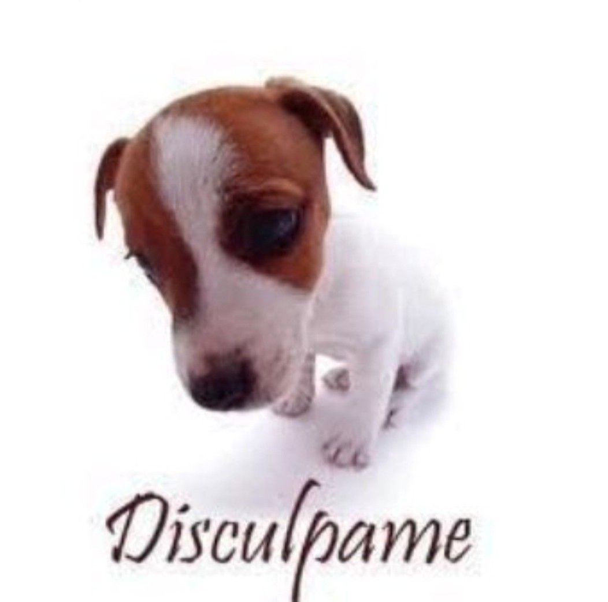
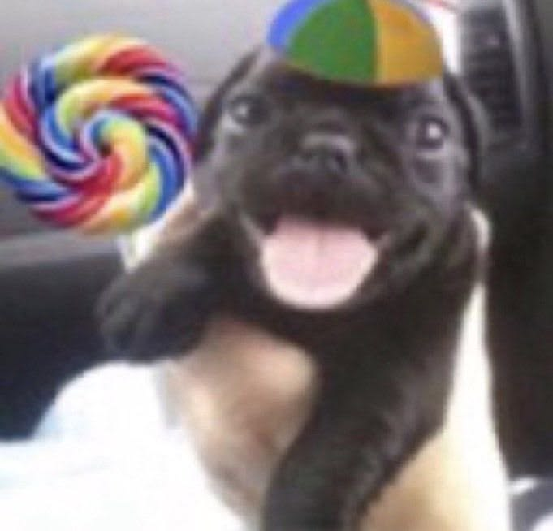
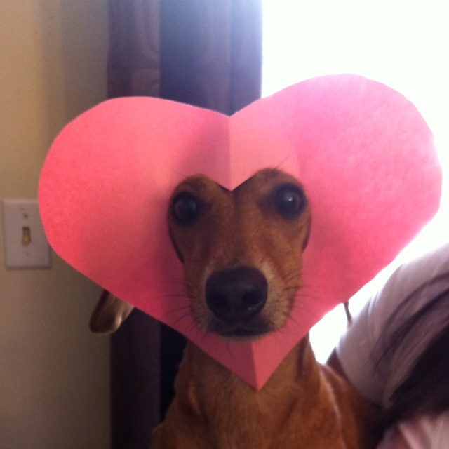

No se si te guste esta clase de detalles, igualmente sabes que mi escritura a mano no es la mejor jaja.
Te amo, Te amo mucho más de lo que soy capaz de imaginar, todo este tiempo compartido contigo te aseguro que la pase increible a tu lado, sea en momentos complicados como cuando aparecio tu papá (Aún sigo traumando :( ), y también en los más lindos, como todos los besos, abrazos, caricias, bromas, charlas. Realmente quiero que sigamos siendo la pareja feliz que al menos yo pienso que somos.

Sé que te he estado haciendo sentir mal estos días, y no me voy a justificar; el tema del pin si es completamente mi culpa, y realmente lo siento muchisimo. Pero lo que no quiero es que me tengas "miedo" en algún sentido, no soy un extraterreste ni nada similar, soy tu novio, y quiero que tengas plena confianza en mí; Y si me has dado esa confinza pero de todos modos no te sentiste segura, el equivocado soy yo. Apreciaria mucho que uses esa misma confianza que te pido para darme a conocer mis errores, porque lo que yo más quiero es ser el mejor novio para ti.
En verdad quiero que seas tú, quiero estar contigo, y compartir mucho más contigo, solo contigo y contigo. Sé que somos bastante jovenes para jurar amor eterno, pero ten por seguro que mi amor a hacia a ti es del tamaño del cosmos entero, y seguira creciendo aun más. Sé que el amor es un tema muy abstracto, no sabria como precisar una descripción a la palabra, pero tú me lo das a entender, sé que tú eres el amor para mi en cierto sentido, es un sentimiento magnifico el que tengo al estar contigo, no se si solo son nervios, felicidad, paz o algo más, pero al menos para mi eso es amor, estar contigo es amor, y espero que sientas ese amor con igual intensidad que yo.

Evan I.